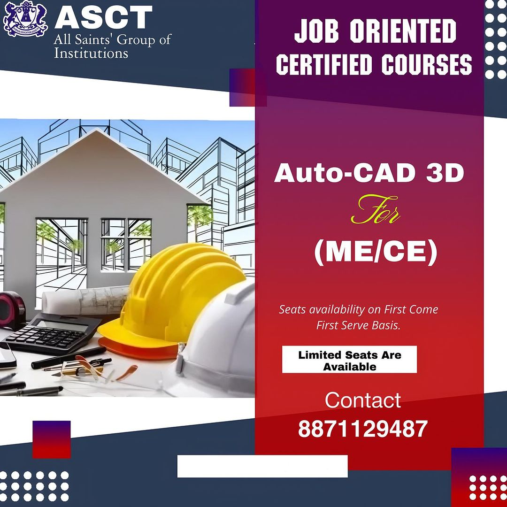
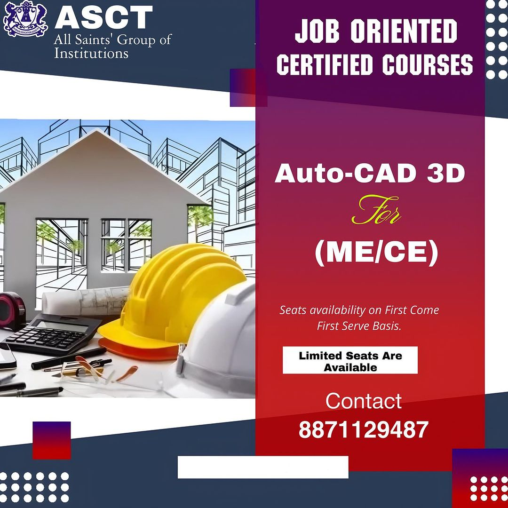
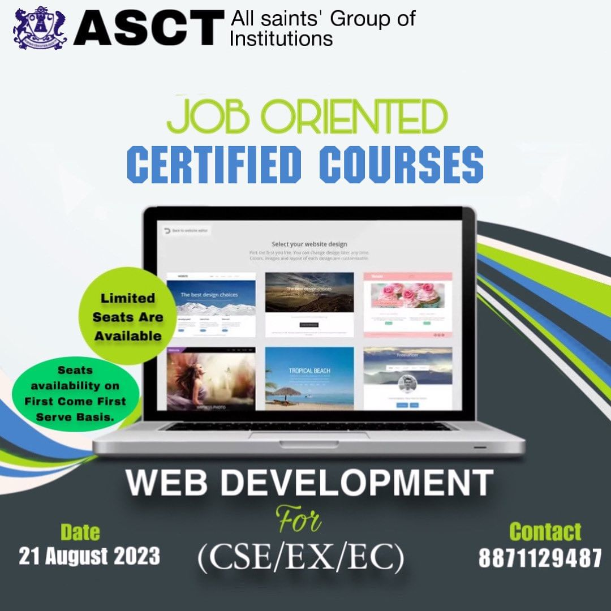
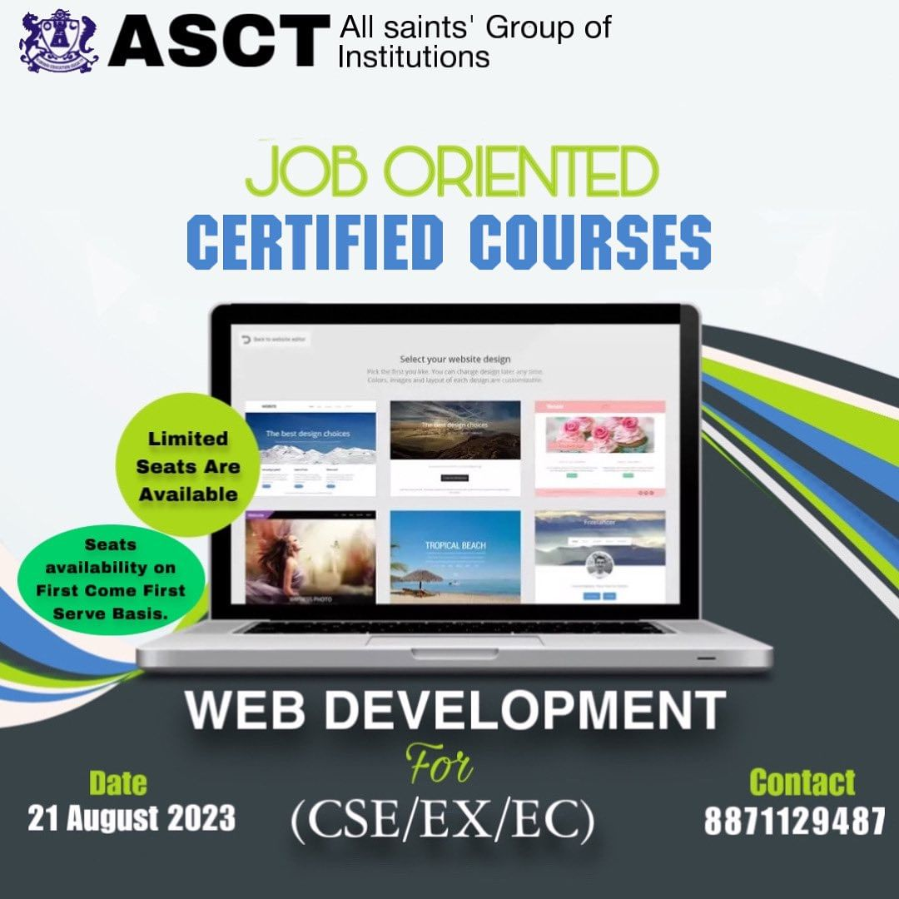
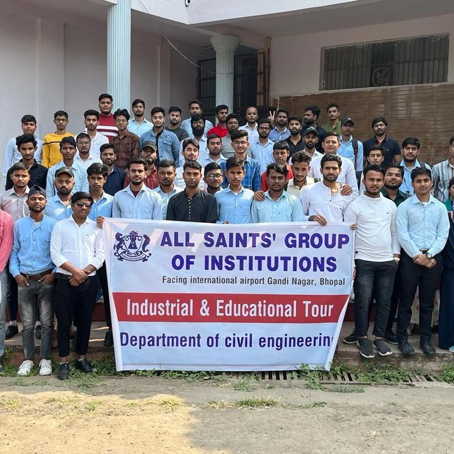
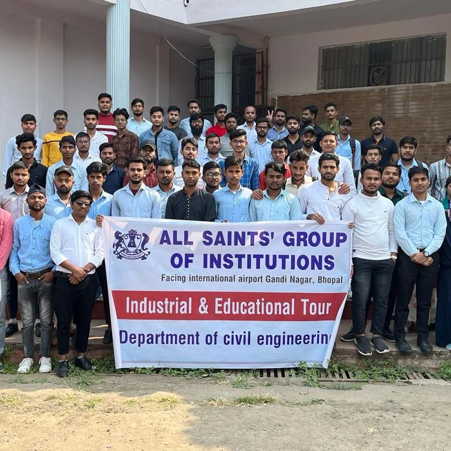

AutoCAD is a fundamental tool in engineering with profound importance in the design and drafting processes. Its versatility and precision make it indispensable in various engineering disciplines. Engineers use AutoCAD to create detailed 2D and 3D drawings, schematics, and blueprints, which are essential for designing buildings, machinery, electrical circuits, and infrastructure. It aids in visualizing complex structures, optimizing designs, and ensuring accuracy, thereby reducing errors and saving time and resources. AutoCAD also facilitates collaboration, enabling teams to work on the same project simultaneously. In summary, AutoCAD streamlines the engineering design process, enhances productivity, and promotes efficient communication, making it an invaluable asset in the field of engineering
 



Web development is a critical discipline in engineering, bridging the gap between technology and user experience. It encompasses the design, creation, and maintenance of websites and web applications. In engineering, web development plays a pivotal role by facilitating communication, data management, and collaboration. Engineers utilize web development to create online platforms for project management, data analysis, and real-time monitoring. These web-based tools streamline workflows, enhance efficiency, and promote collaboration among team members located in different geographical areas. Furthermore, web development is vital for showcasing engineering projects, sharing research findings, and disseminating knowledge to a global audience, advancing the field and fostering innovation.
 


Python, a versatile and widely adopted programming language, plays a pivotal role in engineering applications. Its readability and extensive libraries make it ideal for engineers across various disciplines, from mechanical and civil engineering to data science and software development. Python facilitates numerical and scientific computing through libraries like NumPy and SciPy, aiding complex simulations and data analysis. Engineers employ it for automation and control systems, optimizing industrial processes and streamlining repetitive tasks. Additionally, Python's application in web development and machine learning empowers engineers to create smart systems, enhancing efficiency and innovation. Its accessibility and adaptability make Python an indispensable tool for engineers worldwide.


Automobile engineering is a fascinating career path and students pursuing mechanical engineering can also undergo this training to develop the necessary skills required to work in the automobile industry. The world is adapting to more innovative means of transportation from self-driving cars to pod-based vehicles, and there is a great demand for mechanical engineers in the automobile industry who can work on these technologies. By attending this mechanical workshop you will practically learn about the concepts of automobile systems like transmission, suspension, powertrain, steering, locomotion and chassis design etc. Through this training program, you will develop a deeper understanding about the automobile engineering and the skills required to work in the automobile industry.


IC engines or Internal Combustion Engines are the most widely used engine mechanism in the automobile industry. These engines are capable of producing immense power in contrast to their size and weight. Almost all the automobiles that we see today run using this engine and it is essential for mechanical engineers to learn and get skilled in it to improve their job prospects. This will be an ideal course for mechanical engineers who want to get hold of the concepts involved in the automobile industry. By attending this mechanical workshop you will practically learn the concepts behind the engine control unit, sensors, and actuators and you will also learn to assemble & dismantle IC engines so as to know the internal working mechanisms.


Bridge Design is a vital topic of study in Civil Engineering. In the Bridge Design Workshop, participants will design and fabricate their own bridge. The bridge model made by participants can take up to 1000 times the self-weight.The workshop includes instruction on the key structural components of Structural engineering and bridge construction – beams, arches, trusses, suspensions, and test for maximum load.


Structural engineering deals with the analysis and design of structures. It helps engineers to understand the behavior of a structure when subjected to varied loads and design an efficient structure accordingly. The design of tall buildings essentially involves conceptual design, approximate analysis, preliminary design and optimization to safely carry different loads acting on the structure. The structural design for a skyscraper must ensure that the building is able to stand up safely, able to function without excessive deflections or movements which may cause fatigue of structural elements, cracking or failure of fixtures, fittings or partitions, or discomfort for occupants. As part of this training program, you will also learn about Construction Project Management (CPM) which exposes you to the concepts & methodologies behind scheduling, planning, monitoring, controlling a construction project. Apart from knowing the theoretical concepts, you will also learn to manage a construction project by working on an industrial grade software. Construction industry is one of the largest industries in the world, and one that has the highest stakes. Construction project management is the art of undertaking a construction project to meet its cost, time and quality deadlines in a sustainable way. In short, with this training program you will be able to design a tall structure and understand different stages of a construction project management.
 


Internet of Things, or IoT in short, is the internetworking of physical devices like sensors, motors or simply a smart device and linking them to cloud, so as to get updates remotely from almost anywhere. IoT has promising applications for smart homes, wearable devices, smart cities, connected cars and more. This course introduces you to the amazing world of IoT and its fascinating applications. Using an Arduino board and an LDR sensor, you will develop an electronic device that automatically switches the street light ON and OFF based on the amount of sunlight present. This is one of the key components of smart cities where energy will be used very efficiently by turning the streetlights ON and OFF at the right time as needed. The system will have an LDR sensor that detects the light intensity continuously and sends data to the Arduino. The data will be sent to the cloud for storage and analysis where reports can be generated to show the duration when lights are ON, the amount of power consumed and saved. Apart from gaining practical skills on Internet of Things technology, you will also learn about Arduino, Arduino programming, interfacing sensors with Arduino and calibrating them by doing this course.


Gesture Based Robotics (also known as Accelerometer Controlled Robotics) deals with robots which involve human-machine interaction - where a robot is controlled through hand movements sensed by an accelerometer. The workshop helps participants understand the concepts and applications of an accelerometer sensor, microcontrollers and other electronic components used in Robotics. It includes practical training on building robots based on gesture recognition technology, providing students a glimpse into Human Machine Interaction technologies.